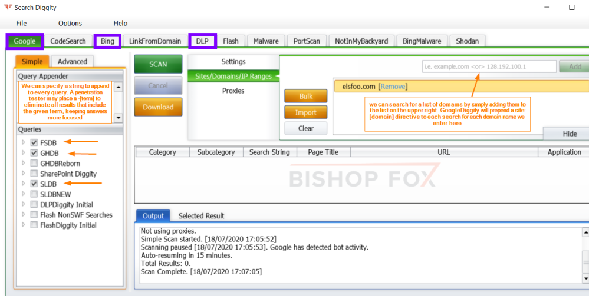

Tool: SearchDiggity
From the work of Johnny Long “Google Hacking Database” (GHDB), other
organizations began developing series of search engine queries to find vulnerable systems and sensitive information
disclosure
• Foundstone company developed for
◇ the search engine Google the
Foundstone Database (FSDB)
• Bishop Fox company developed for
◇ the search engine Google the
Stach & Liu Database (SLDB)
◇ the search engine Bing the
Bing Hacking Database
(BHDB)
One of the most powerful search engine vulnerability-finding tools is the SearchDiggity(a Windows
GUI tool)
Site:
https://resources.bishopfox.com/resources/tools/google-hacking-diggity/attack-tools/When
we specify a domain SearchDiggity scan only this page not the subdomains
DLP Tab→ focuses on Data Leakage
Prevention. It has the capability to search both Google and Bing for evidence of websites that are leaking sensitive
personally identifiable information, such as Social Security numbers, bank account numbers, and other related
data.
